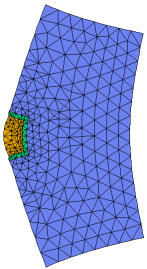

|
elasticity |

  
|
|
elasticity |
|
{ ELASTICITY.PDE
This example shows the application of FlexPDE to a complex problem in
thermo-elasticity. The equations of thermal diffusion and
plane strain are solved simultaneously to give the thermally-induced
stress and deformation in a laser application.
A rod amplifier of square cross-section is imbedded in a large copper
heat-sink. The rod is surrounded by a thin layer of compliant metal.
Pump light is focussed on the exposed side of the rod.
We wish to calculate the effect of the thermal load on the laser rod.
The equations of Stress/Strain arise from the balance of forces in a
material medium, expressed as
dx(Sx) + dy(Txy) + Fx = 0
dx(Txy) + dy(Sy) + Fy = 0
where Sx and Sy are the stresses in the x- and y- directions,
Txy is the shear stress, and Fx and Fy are the body forces in the
x- and y- directions.
The deformation of the material is described by the displacements,
U and V, from which the strains are defined as
ex = dx(U)
ey = dy(V)
gxy = dy(U) + dx(V).
The eight quantities U,V,ex,ey,gxy,Sx,Sy and Txy are related through the
constitutive relations of the material. In general,
Sx = C11*ex + C12*ey + C13*gxy - b*Temp
Sy = C12*ex + C22*ey + C23*gxy - b*Temp
Txy = C13*ex + C23*ey + C33*gxy
In orthotropic solids, we may take C13 = C23 = 0.
Combining all these relations, we get the displacement equations:
dx[C11*dx(U)+C12*dy(V)] + dy[C33*(dy(U)+dx(V))] + Fx = dx(b*Temp)
dy[C12*dx(U)+C22*dy(V)] + dx[C33*(dy(U)+dx(V))] + Fy = dy(b*Temp)
The "Plane-Strain" approximation is appropriate for the cross-section
of a cylinder which is long in the Z-direction, and in which there is no
Z-strain. The cylinder is loaded by surface tractions and body forces
applied along the length of cylinder, and which are independent of Z.
In this case, we may write
C11 = G*(1-nu) C12 = G*nu b = G*alpha*(1+nu)
C22 = G*(1-nu)
C33 = G*(1-2*nu)/2
where G = E/[(1+nu)*(1-2*nu)]
E is Young's Modulus
nu is Poisson's Ratio
and alpha is the thermal expansion coefficient.
The displacement form of the stress equations (for uniform temperature
and no body forces) is then (dividing out G):
dx[(1-nu)*dx(U)+nu*dy(V)] + 0.5*(1-2*nu)*dy[dy(U)+dx(V)]
= alpha*(1+nu)*dx(Temp)
dy[nu*dx(U)+(1-nu)*dy(V)] + 0.5*(1-2*nu)*dx[dy(U)+dx(V)]
= alpha*(1+nu)*dy(Temp)
In order to quantify the "natural" (or "load") boundary condition mechanism,
consider the stress equations in their original form:
dx(Sx) + dy(Txy) = 0
dx(Txy) + dy(Sy) = 0
These can be written as
div(P) = 0
div(Q) = 0
where P = [Sx,Txy]
and Q = [Txy,Sy]
The natural (or "load") boundary condition for the U-equation defines the
outward surface-normal component of P, while the natural boundary condition
for the V-equation defines the surface-normal component of Q. Thus, the
natural boundary conditions for the U- and V- equations together define
the surface load vector.
On a free boundary, both of these vectors are zero, so a free boundary
is simply specified by
load(U) = 0
load(V) = 0.
-- Submitted by Steve Sutton, Lawrence Livermore National Laboratory
}
title "Thermo-Elastic Stress"
select errlim = 1.0e-4
variables
Tp { declare the system variables to be Tp, Up and Vp }
Up
Vp
definitions
k { declare thermal conductivity - values come later }
Q { declare thermal Source - values come later }
E { declare Young's Modulus - values come later }
nu { declare Poisson's Ratio - values come later }
alpha { declare Expansion coefficient - values come later }
{ The heat deposition function: }
adep = 1.8 { define the absorption coefficient }
yo = 0.6 { define the pattern width }
I0 = 1 { define the input flux }
Qrodp = adep*I0*(exp(-adep*x))*(exp(-((y/yo)^2)))
Tb = 0. { define the distant thermal sink temperature }
{ define the constitutive relations }
G = E/((1.+nu)*(1.-2.*nu))
C11 = G*(1-nu)
C12 = G*nu
C22 = G*(1-nu)
C33 = G*(1-2*nu)/2
b = G*alpha*(1+nu)
{ define some utility functions }
ex = dx(Up)
ey = dy(Vp)
gxy = dy(Up) + dx(Vp)
Sx = C11*ex + C12*ey - b*Tp
Sy = C12*ex + C22*ey - b*Tp
Txy = C33*gxy
initial values
Tp = 5. { give FlexPDE an estimate of variable range }
Up = 1.e-5
Vp = 1.e-5
equations
{ the heat equation }
Tp: dx(k*dx(Tp)) + dy(k*dy(Tp)) + Q = 0.
{ the U-displacement equation }
Up: dx(C11*dx(Up)+C12*dy(Vp)-b*Tp) + dy(C33*(dy(Up)+dx(Vp))) = 0.
{ the V-displacement equation }
Vp: dx(C33*(dy(Up)+dx(Vp))) + dy(C12*dx(Up)+C22*dy(Vp)-b*Tp) = 0.
constraints { prevent rigid-body motion: }
integral(up) = 0 { cancel X-motion }
integral(vp) = 0 { cancel Y-motion }
integral(dx(vp) - dy(up)) = 0 { cancel rotation }
boundaries
region 1 { region one defines the problem domain as all copper
and sets the boundary conditions for the problem }
k = 0.083
Q = 0.
E = 117.0e3
nu = 0.4
alpha = 10e-6
start(0,-5)
value(Tp) = Tb { define a distant boundary with fixed temperature }
natural(Up) = 0. { zero X-load }
natural(Vp) = 0. { and zero Y-load }
line to (5,-5) to (5,5) to (0,5)
natural(Tp) = 0. { left face has no heat loss }
natural(Up) = 0. { left boundary is free }
natural(Vp) = 0.
line to close
region 2 { region two overlays an Indium potting layer }
k = 0.083
Q = 0.
E = 60.0e3
nu = 0.4
alpha = 16e-6
start (0,-0.6)
line to (0.6,-0.6) to (0.6,0.6) to (0,0.6) to (0,0.5) to (0,-0.5) to close
region 3 { region three overlays the laser rod }
k = 0.0098 Q = Qrodp E = 282.0e3 nu = 0.28 alpha = 7e-6 start (0,-0.5) line to (0.5,-0.5) to (0.5,0.5) to (0,0.5) to close
monitors contour(Tp) as "Temperature" contour(Tp) as "Temperature" zoom(0,0,1,1) contour(Q) as "Heat deposition" zoom(0,0,1,1) contour(Up) as "X-displacement" zoom(0,0,1,1) contour(Vp) as "Y-displacement" zoom(0,0,1,1) grid(x+10000*Up,y+10000*Vp) as "deformation"
plots grid(x,y) contour(Tp) as "Temperature" contour(Tp) as "Temperature" zoom(0,0,1,1) contour(Q) as "Heat deposition" zoom(0,0,1,1) contour(Up) as "X-displacement" !zoom(0,0,1,1) contour(Vp) as "Y-displacement" !zoom(0,0,1,1) contour(Sx) as "X-Stress" zoom(0,-0.75,1.5,1.5) contour(Sy) as "Y-Stress" zoom(0,-0.75,1.5,1.5) contour(Txy) as "Shear Stress" zoom(0,-0.75,1.5,1.5) vector(Up,Vp) as "displacement" vector(Up,Vp) as "displacement" zoom(0,0,1,1) grid(x+10000*Up,y+10000*Vp) as "deformation"
end |
 |